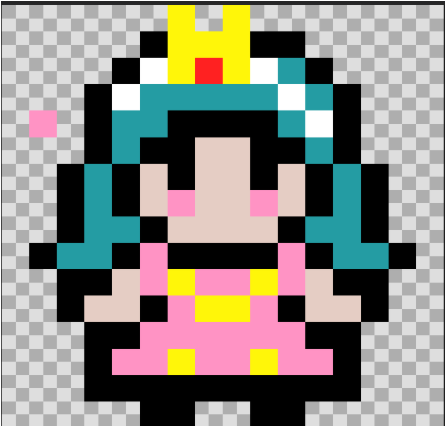
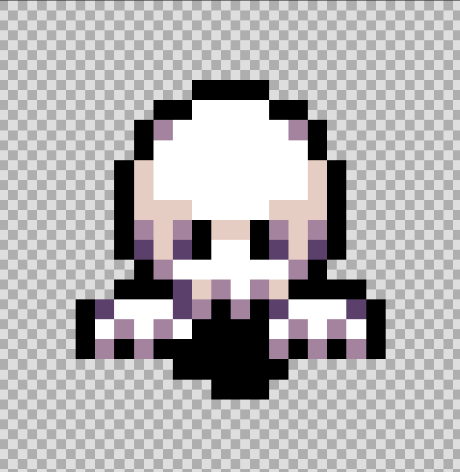

1. PERTSONAI NAGUSIA
Printzesa da pertsonaia nagusia, eta jokalariak lagundu beharko dio printzesari kartzeletik ihes egiten eta etxerako bidean zehar topatzen diren etsai guztiei aurre egiten, etxera seguru itzuli arte.

2. PERTSONAIA:MAMUA
Mamuek kartzelan dauden etsaiak dira, kartzelan 10 mamu daude mugitzen eta haien helburua izango da printzesa kartzeletik ateratzen ez uztea eta ahalik eta azkarren harrapatzea.

3. SORGINAK
Sorginak 2. mapan dauden etsaiak dira, mapan bertan, printzesak 10 sorgin aurkituko ditu alde batetik bestera mugitzen, haiek printzesa harrapatzen saiatu beharko dira.

4. EHIZTARIAK
Ehiztariak azkeneko 3. mapan agertzen diren etsaiak dira. Ehiztariak giltza babesten egongo dira, printzesak giltza har ez dezan eta bere etxera ez iristeko.